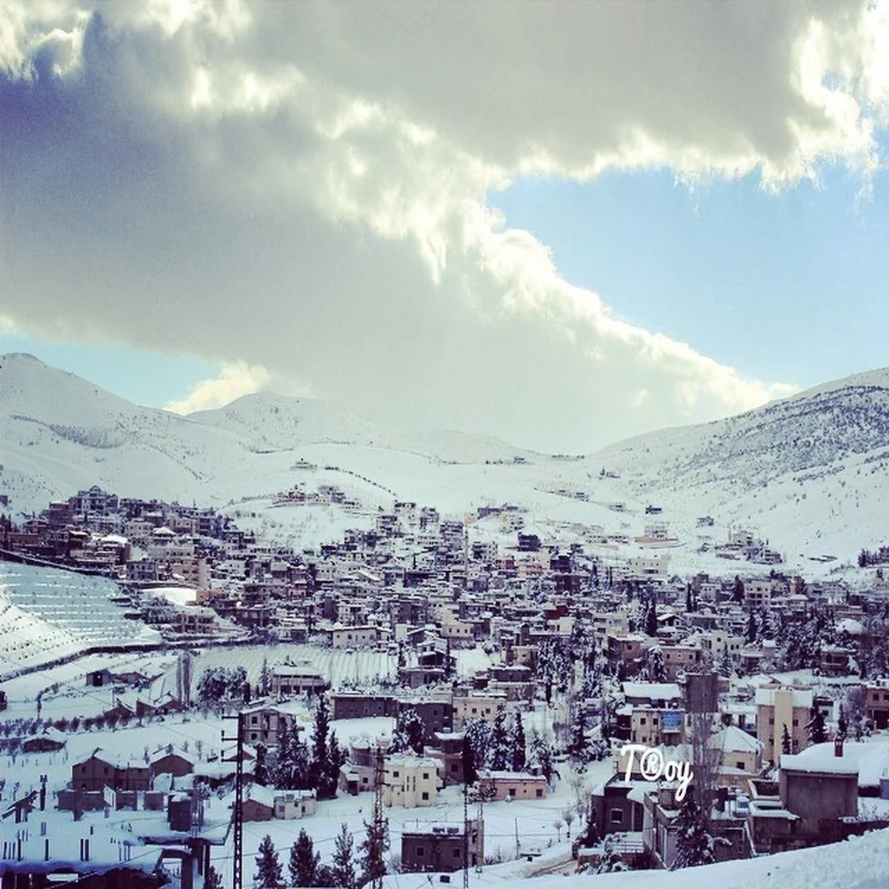
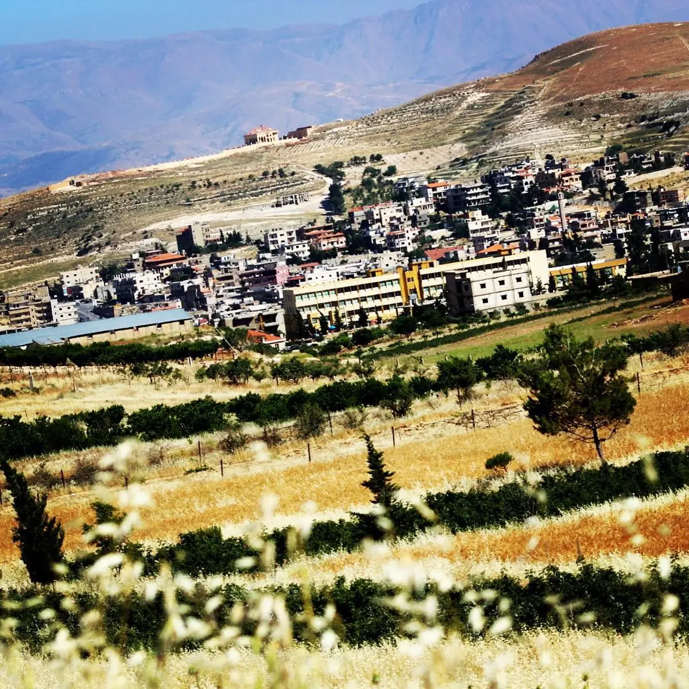
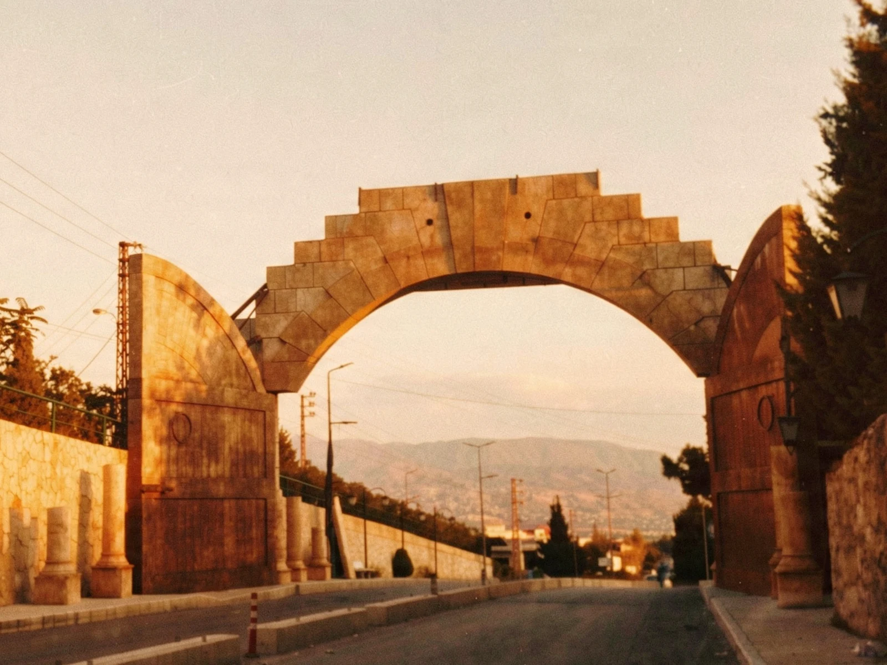
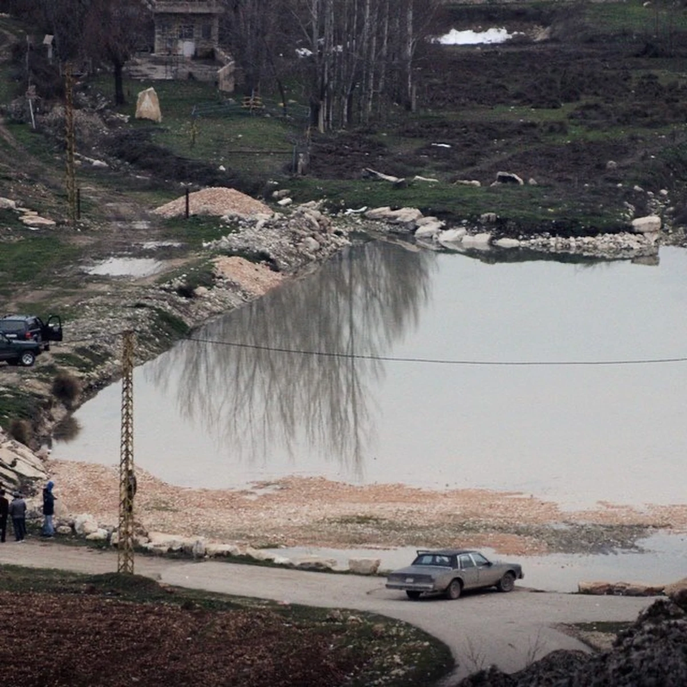
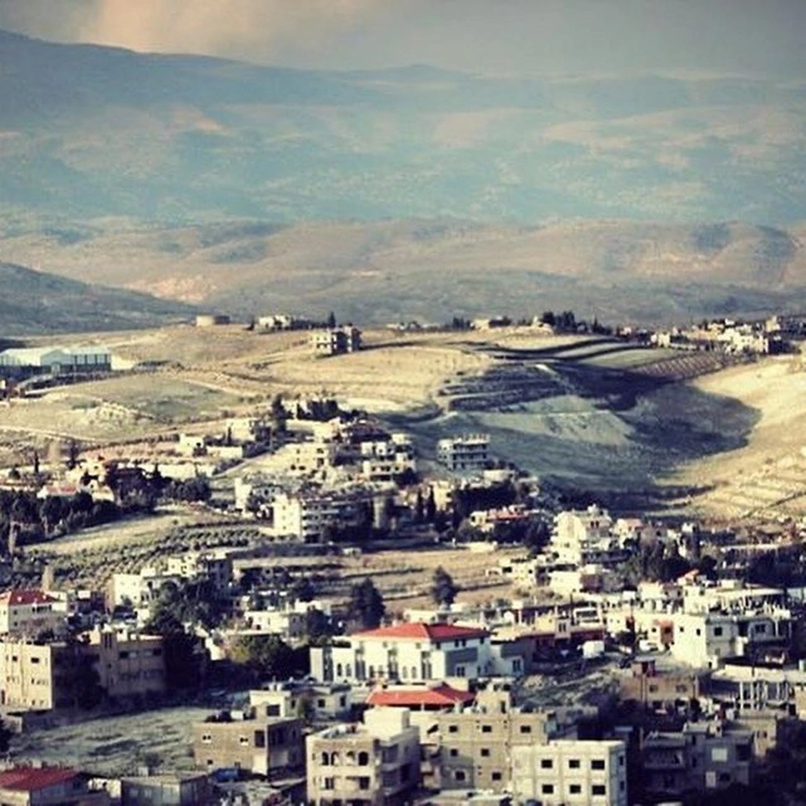
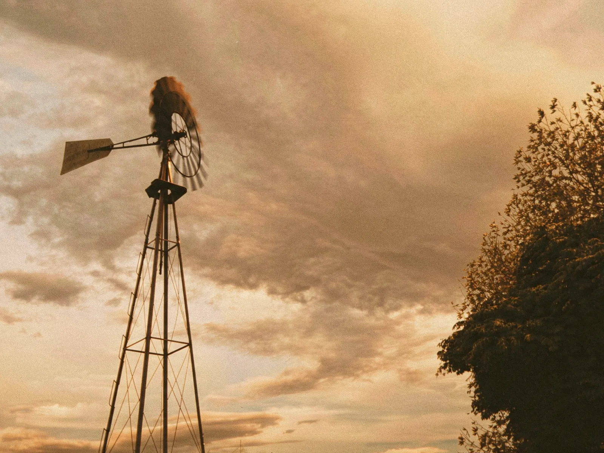

شتاء
سفوح جبل صنين
تلال مكسوّة بالثلج فوق البلدة، مثالية للصور والنزهات الشتوية.
أربعة فصول حقيقية، هواء جبلي، وإطلالات على سهل البقاع.
على ارتفاع 1,250 مترًا، تتميّز شمسطار بصيف معتدل وخريف ملوّن وشتاء مثلج. وتحيط بالبلدة أشجار الصنوبر والسرو والبساتين.


شتاء
تلال مكسوّة بالثلج فوق البلدة، مثالية للصور والنزهات الشتوية.

طوال السنة
من الشوارع العليا يمكنك رؤية سهل البقاع الأخضر بأكمله.

طوال السنة
ترحّب القنطرة الحجرية بالزوّار، وتُضاء ليلًا في المناسبات والاحتفالات.

ربيع
تمتلئ البرك الصغيرة بالمياه في الربيع وتعكس الأشجار المحيطة بها.

من الربيع إلى الخريف
تروي المغاور والآبار وخزانات المياه الحجرية العائدة إلى العهد البيزنطي قصة الاستيطان القديم.

من الصيف إلى الخريف
غروب الشمس الذهبي فوق الحقول يجعل ساعات العصر أفضل وقت للنزهة.